Front view of cup

Side view of cup
For the simplified version of stitching implemented in this project, the captured pictures must be rotated around a single center of projection (a camera lens, for example), in order to avoid translation transformations. The goal is to be able to "deproject" an image 1 back into a pencil of rays, then project that pencil of rays onto imag 2. This will eventually allow us to stitch together a mosaic (aka a panorama).
The following are some pictures I captured to test out simple homography transformations.


Let us assume the transformation of points in one image: $p$, to points in another image: $p'$, can be written in matrix form as $p' = Hp$. Let $n$ be the number of points.
To do this transformation, we must first convert our points from homogenous coordinates to inhomogenous coordinates: $[x, y]$ then becomes $[x, y, 1]$, allowing $p$ to be a 3 by n matrix. However, when multiplying these inhomogenous coordinates by the matrix $H$, the resulting coordinates $p'$ will also be inhomogenous, and will be scaled by some factor $z$. To instead yield coordinates of the form $[x', y', 1]$, we must rewrite our matrix $p$ as such:
$$ p = \begin{pmatrix} x_{1} & y_{1} & 1 & 0 & 0 & 0 & -x_{1}x_{1}' -x_{1}'y_{1} \\ 0 & 0 & 0 & x_{1} & y_{1} & 1 & -x_{1}y_{1}' -y_{1}'y_{1} \\ \end{pmatrix} $$
in order to "divide" by the factor $z$ within the matrix multiplication itself.
The following are some examples of transformed correspondences between two images along with the homography matrix $H$ used to compute the transformation.
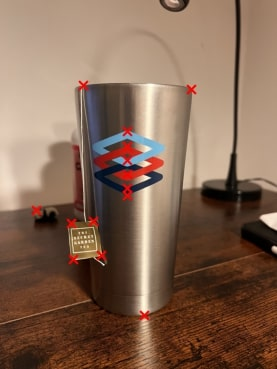
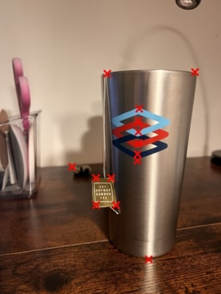
$$ H_{cup} = \begin{pmatrix} 0.687 & -0.0247 & 736 \\ -0.147 & 0.878 & 242 \\ -0.0000927 & -0.00000005 & 1 \\ \end{pmatrix} $$
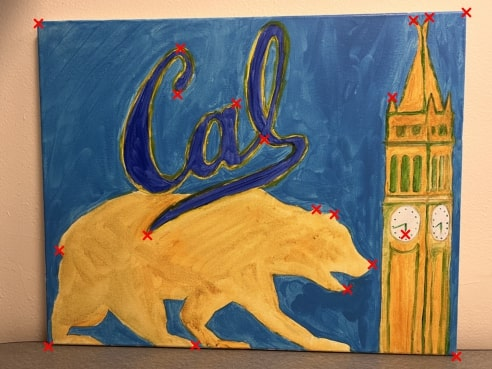
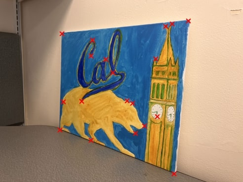
$$ H_{bear} = \begin{pmatrix} 0.28 & -0.021 & 913 \\ -0.0779 & 0.592 & 456 \\ -0.0000963 & 0.00000545 & 1 \\ \end{pmatrix} $$
Image rectification creates a transformation from one image plane to another by using the homography matrix mentioned in Part 2. In the examples below, I identified four corners of some object (the bear painting or the performance curtain, for example) and transformed them into a flat image plane with the same dimensions as the original image.
The key to this transformation is the concept of inverse warping as it decreases the number of potential holes (pixels without values) in the resulting image. To implement inverse warping, I first created a grid of coordinates for the desired image space I was transforming to and calculated the $H^{-1}$ matrix which, when multiplied by the grid coordinates, returns points in the original image that correspond to points in the coordinate grid of the transformed/desired image space (the flat coordinate space). Effectively, inverse warping "colors" each pixel in the desired image space with the corresponding point from the original image.
However, because transformation does not return discrete pixel values, one additional step is required to make sure our image coloring is smooth — interpolation. I implemented two interpolation methods: nearest neighbor and bilinear. Nearest neighbor rounds the corresponding point in the original image to the nearest pixel value and that value is then used to color the transformed image. Bilinear interpolation uses a weighted sum of the nearest four pixels in the original image to create a smoother representation of the pixel value in the transformed image.
As you can see, the bilinear interpolation method results in much smoother, and more accurate pixel values, whereas the nearest neighbor interpolation produces a grainier image.


To blend images into a mosaic, I chose to warp all my images to a single image that I designated as the "anchor". In contrast to Part 3, each image must be warped into the anchor image space rather than some flat image space like so:
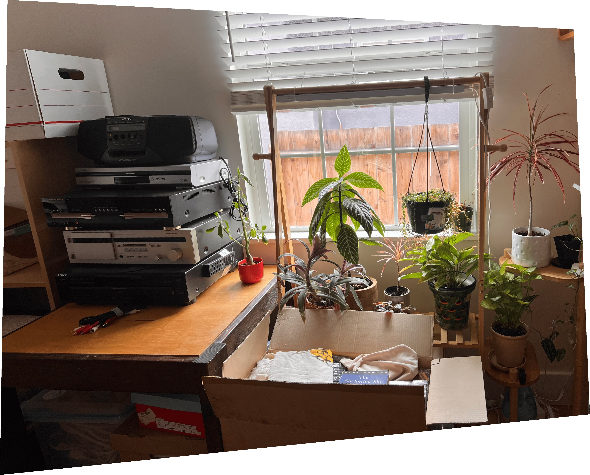
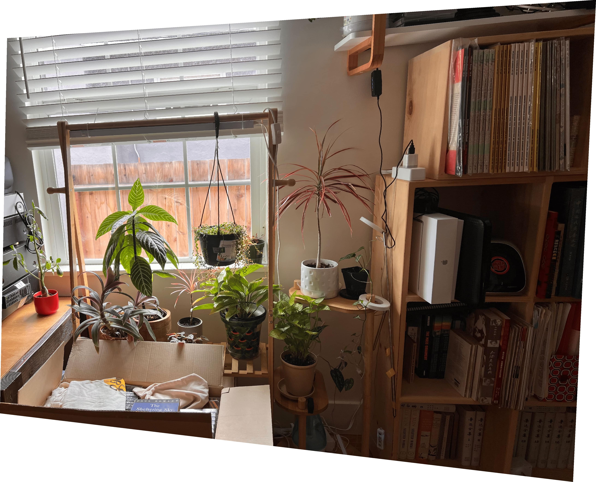
Then the tricky part is to pad the anchor and warped images such that both are the same dimensions and can be added together. I first calculated the corners of the warped image in the reference image space (marked as red x's in the images below). I then calculated the minimum and maximum rows and columns to get the correct padding for both images such that their sizes matched. The padding automatically results in correct alignment since numpy's pad function requires input for top, bottom, right, and left padding. The padding can be seen with the dashed blue line.
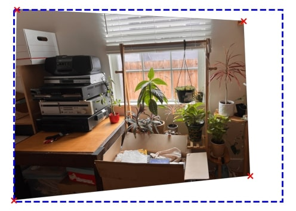
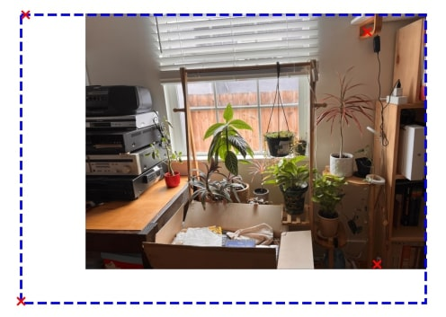
I noticed I had off-by-one issues when trying to pad both the anchor image and the warped image, so I just padded the anchor, then used the padded anchor image dimensions to pad the warped image.
Then, to blend the two images together, I used a normalized weighted sum of the alphas for each image. Let $i$ be the number of images in the mosaic (which is 2 for now) and let $A_p$ be the alpha at pixel $p$ in the stitched image. $$ A_{p} = \sum_{\forall i} \alpha_i$$ $$C_p = \frac{1}{A_p} \sum_{\forall i} img_i * \alpha_i$$
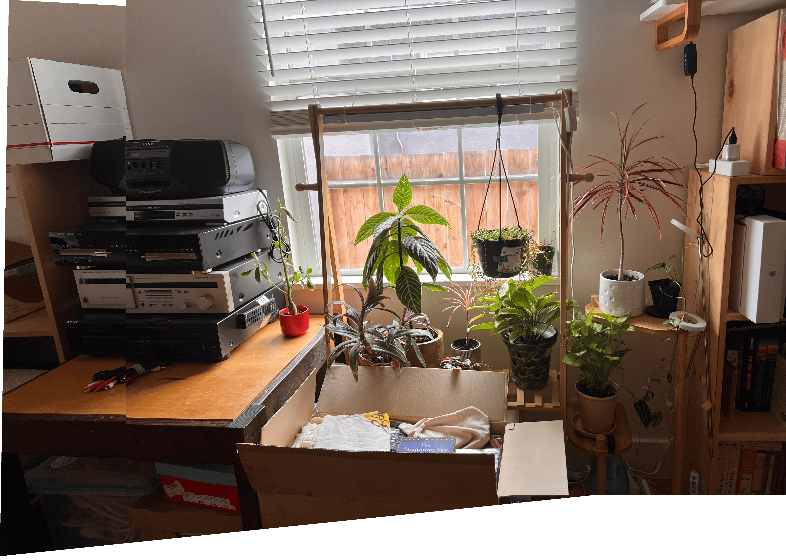
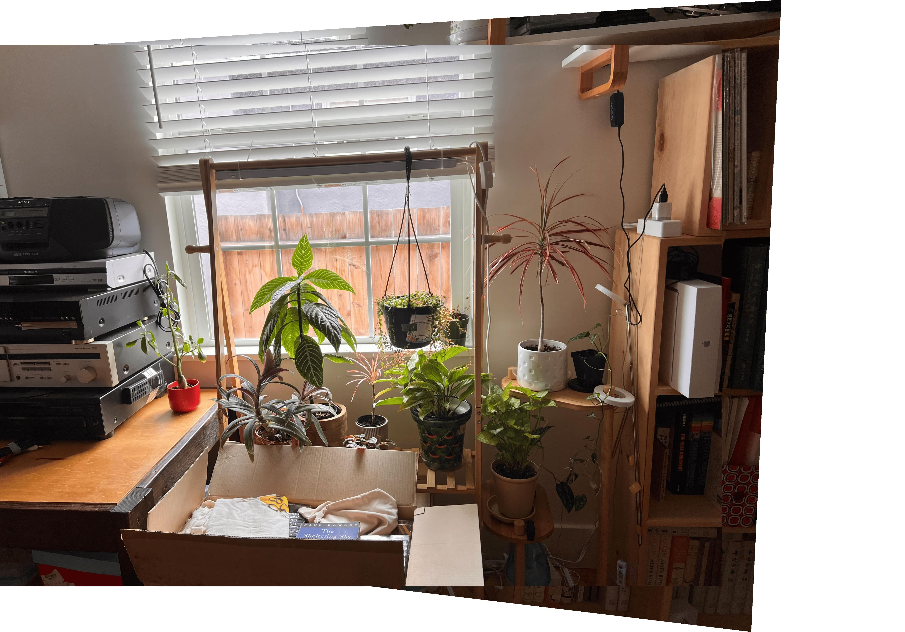
Now that we're trying to do autostitching, the main issue is how do we find correspondences? When doing manual correspondences, the easiest features we tend to select are corners. So, let's try to find some corners!
Using a skimage's Harris Corner algorithm, I found quite a few corner images in both of the photos I wanted to align.
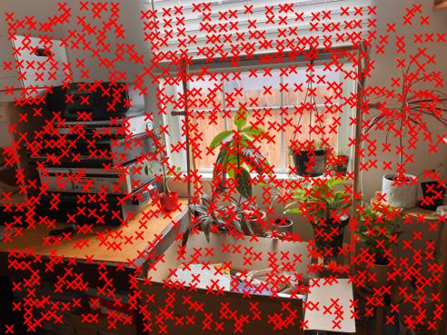
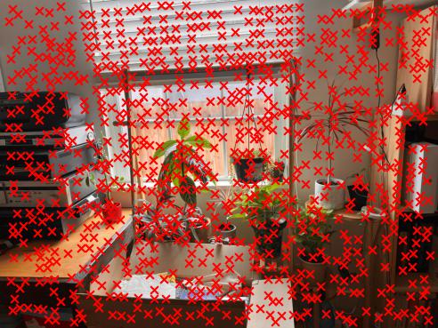
Just using Harris corners doesn't guarantee we have a good distribution of corner points.
Adaptive Non-Maximal Suppression (ANMS) sorts all corners by their corner strength (Harris value) and distance away from each other. For each interest point $i$ from the harris_corner function, we calculate the Euclidean distance of each corner from every other Harris corner: $|x_i - x_j|$. Let the corner strength of interest point $i$ be $f_i$. We then take the closest corner $j$ whose weighted strength of $0.9 * f_j$ is greater than the strength of the current point $f_i$. Let the distance between two such points $|x_i - x_j|$ be called $r_i$, the suppression radius of Harris corner $i$. We then take the first 500 points with the greatest suppression radii. For those who enjoy math, here is the full optimization equation that was taken from the following paper:
$$ \hspace{0pt} \begin{aligned} r_i &= \min_j |x_i - x_j| \\ \text{s.t. } & f(x_i) \lt c_{\text{robust}} f(x_j); x_j \in I \end{aligned} $$
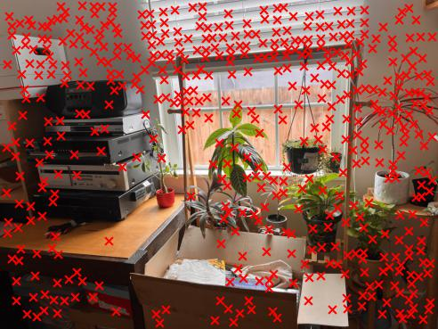
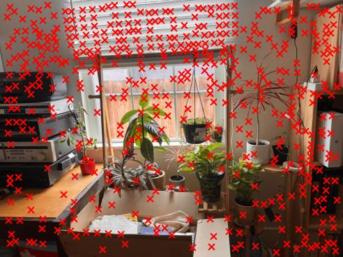
Ok we found some corners. Yay! But how do we match our corners across two images? — We need to label them!
To match our features, we take a 40x40 patch with the Harris corner in the center. Then, we sample every 5th point from the patch to get an 8x8 feature label. The point of downsampling is to make our feature matching algorithm later more robust and not get too focused on high frequency details.
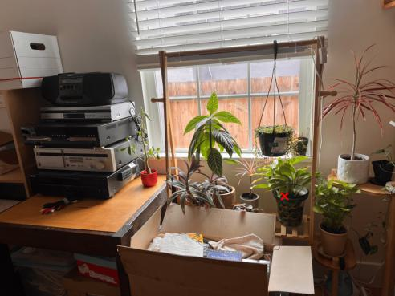
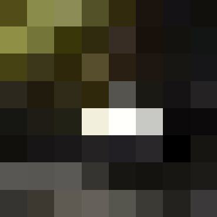
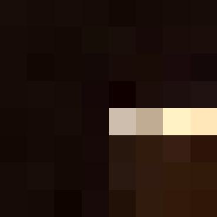
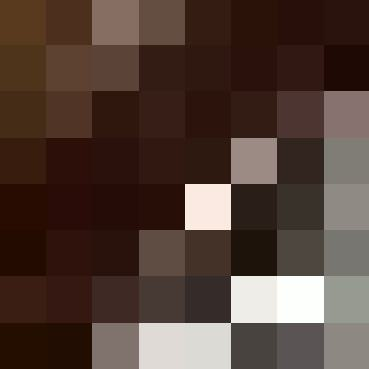
To match up our correspondences, we can use sklearn's NearestNeighbor algorithm to find descriptors that are closest to each other in feature space. However, what if a descriptor in one image matches with two or more descriptors in image 2? — Let's use the two closest neighbors to sift out some imposter matches. If the distance between the two closest candidates is large, that means the nearest neighbor is most likely going to be the correct match. If, however, the two nearest neighbors are both close in distance, then probably neither of them is a match and our poor descriptor just wasn't descriptive enough.
By using this ratio of the distance of the nearest neighbor divided by the distance of the second nearest neighbor, we get some promising results.
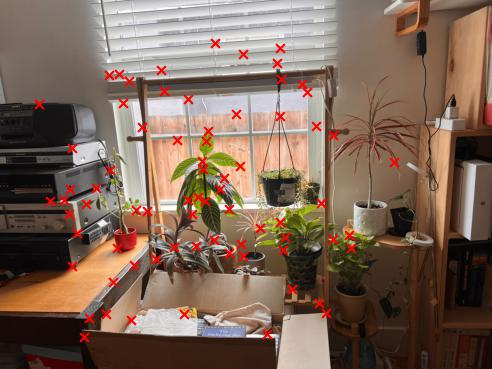
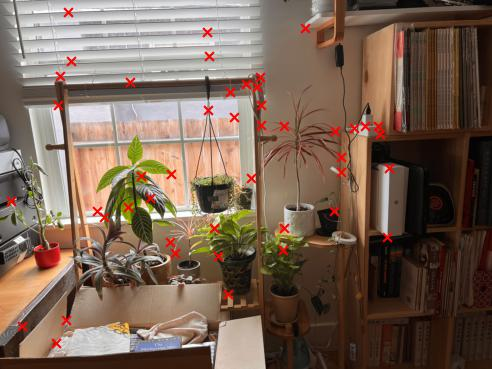
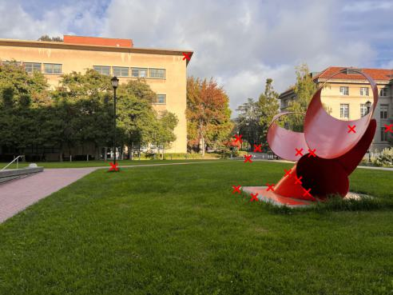
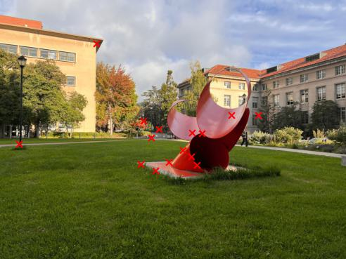
But alas! Even with feature matching, we aren't always guaranteed to have good correspondences. To make our homography (and eventual mosaic stitching) more accurate, we need something more robust.
Random Sample Concensus (RANSAC) randomly chooses a handful of the matched features from the previous part and calculates a homography. Using Euclidean distance, RANSAC then quantifies the error between the resulting homography and the correspondences from the image we are projecting to (our ground truth), and counts the number of "good" matches (inliers) based on some threshold. The operation is repeated for a number of iterations and returns the homography matrix and features that correspond to the projection with the greatest number of "good" correspondences. Essentially, the algorithm "votes" for which correspondences are good enough to use for the image projection. Finally, we use the resulting homography matrix to automatically stitch our mosaic.
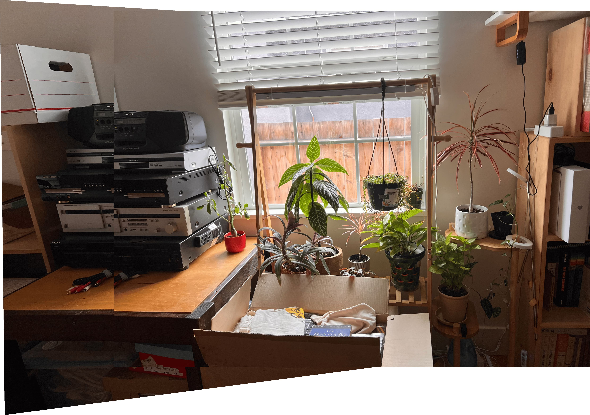
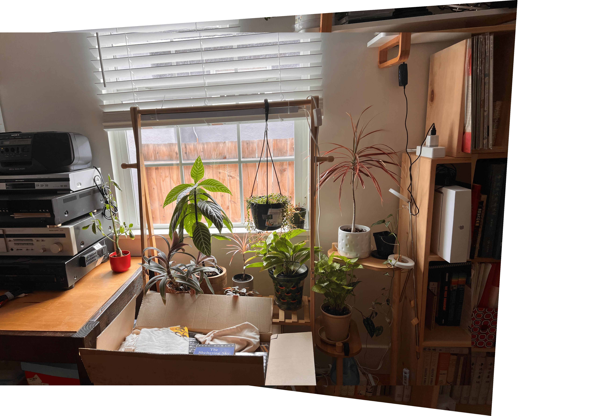
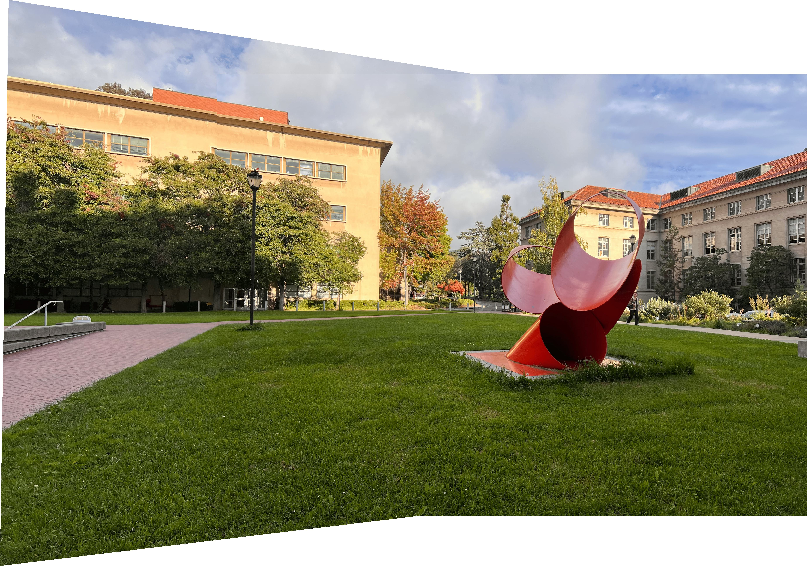
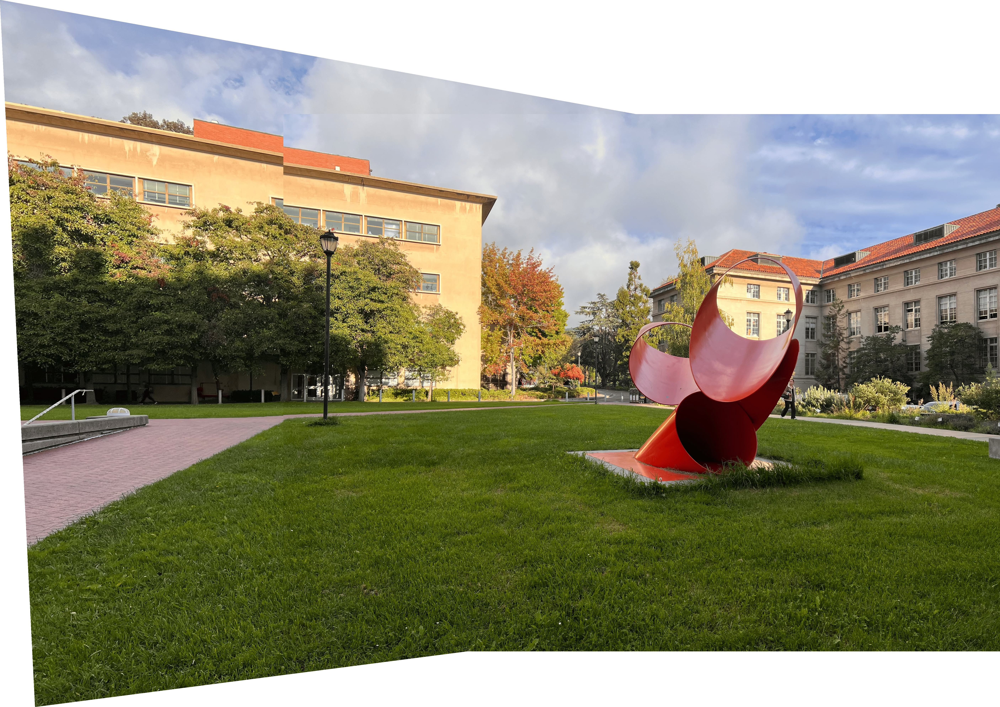